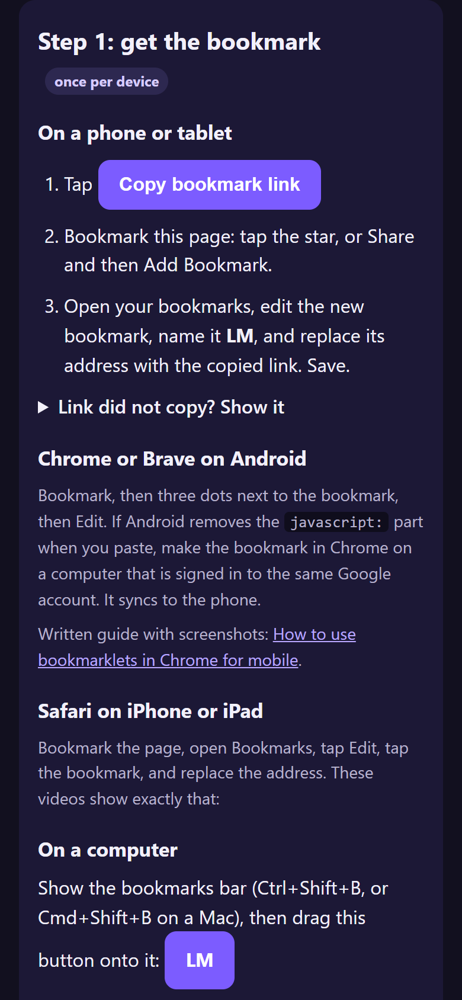

Learnable Meta on any browser
Play GeoGuessr's Learnable Meta maps on a phone, tablet or computer in Chrome, Brave, Edge, Samsung Internet or Safari, with no userscript manager. The official, unmodified Learnable Meta script is loaded by a bookmark you tap once per game.
Relay status
Checking...
How it works
- Phone browsers cannot install Tampermonkey, so the normal Learnable Meta install does not work there.
- A bookmarklet is a bookmark that runs a little JavaScript when you tap it. Ours loads the real Learnable Meta script into the GeoGuessr page.
- A small free relay forwards the script's requests to the Learnable Meta server, which otherwise refuses calls from a plain web page.
- Nothing is installed. Nothing on your account changes. The GeoGuessr app is not supported, only the website in a browser.
Step 1: get the bookmark once per device
On a phone or tablet
- Tap
- Bookmark this page: tap the star, or Share and then Add Bookmark.
- Open your bookmarks, edit the new bookmark, name it LM, and replace its address with the copied link. Save.
Link did not copy? Show it

Chrome or Brave on Android
Bookmark, then three dots next to the bookmark, then Edit. If Android removes the javascript: part when you paste, make the bookmark in Chrome on a computer that is signed in to the same Google account. It syncs to the phone.
Written guide with screenshots: How to use bookmarklets in Chrome for mobile.
Safari on iPhone or iPad
Bookmark the page, open Bookmarks, tap Edit, tap the bookmark, and replace the address. These videos show exactly that:
On a computer
Show the bookmarks bar (Ctrl+Shift+B, or Cmd+Shift+B on a Mac), then drag this button onto it: LM
Step 2: play one tap per game
- Open www.geoguessr.com in the browser, log in, and open a Learnable Meta map, for example A Learnable Meta World - Basics. Press Play.
- When the round has loaded, tap the address bar, type LM, and tap the bookmark in the suggestions. In Safari you can also open it from the bookmarks menu.
- A message says "Loading Learnable Meta..." and then "Learnable Meta loaded". A round LM button appears bottom right.
- Make your guess. The Learnable Meta explanation appears on the result screen, as it does on a computer.


Tap the bookmark again after any full page reload, for example when you open GeoGuessr fresh or pull down to refresh. Going from round to round or into the next game does not reload the page, so one tap normally lasts a whole session. Phones are cramped; a tablet or the browser's "Desktop site" option gives the window more room.
iPhone and iPad: two taps from the Share menu optional
Safari only. Set up once in the Shortcuts app. Afterwards, on geoguessr.com, it is Share, then Learnable Meta.
- Open the Shortcuts app, tap +, tap Add Action, search for Run JavaScript on Web Page and add it.
- Delete the example code in the action and paste this:
- Tap the info icon at the bottom, turn on Show in Share Sheet, and name the shortcut Learnable Meta. Done.
Show the shortcut code
Apple's own guide to this action: Run JavaScript on Webpage in Shortcuts.
Troubleshooting
- "Open geoguessr.com first": you tapped the bookmark on another site. Open the game first.
- Nothing happens when tapping the bookmark: on Android you must start it from the address bar, not from the bookmarks list. Type LM and tap the suggestion.
- Loaded, but no meta after a guess: tap the round LM button and choose Check game now. If it still does not show, choose Diagnostics, tap Copy, and send the text to the person who runs the relay.
- Map not supported: the script only shows metas on Learnable Meta maps. Pick one from learnablemeta.com/maps.

Host your own copy for tinkerers
Everything is open source: the GitHub repository. The relay is a free Cloudflare Worker; this website is GitHub Pages. To run your own:
- Fork the repository on GitHub (the Fork button, top right).
- Create the relay. At dash.cloudflare.com go to Workers & Pages, then Create, then Start with Hello World, name it
lm-relay, Deploy. Then Edit code, delete everything, paste the contents ofworker.jsfrom your fork, and Deploy again. Your relay address looks likehttps://lm-relay.yourname.workers.dev. - Point the site at your relay. In your fork, edit
docs/index.htmland change thelm-relaymeta tag near the top to your relay address. Also changeSITE_URLat the top ofworker.template.jsto your Pages address and rebuild withbuild.sh, or simply edit the same line inworker.js. - Turn on GitHub Pages. In the fork, Settings, then Pages, set Source to "Deploy from a branch", branch
main, folder/docs. Your guide appears athttps://yourname.github.io/learnable-meta-mobile/. - Optional, deploy from GitHub automatically. In Cloudflare, Workers & Pages, Create, then "Import a repository" and pick your fork. Cloudflare then redeploys the worker on every push, using
wrangler.jsonc.

Video walkthrough of creating and deploying a Worker:
The relay only answers pages on geoguessr.com, forwards no personal tokens, and stores nothing. Cloudflare's free plan allows 100,000 requests a day.